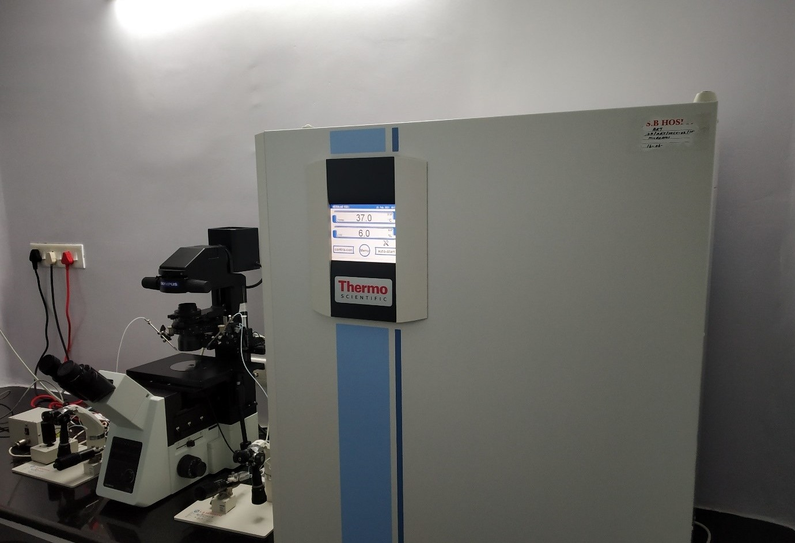
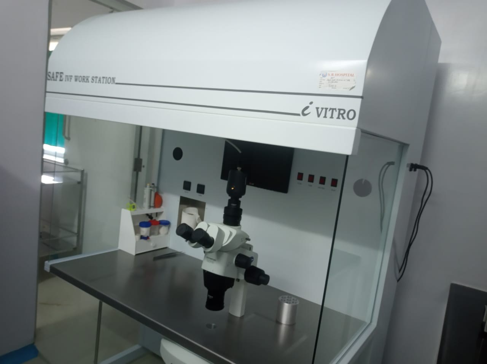
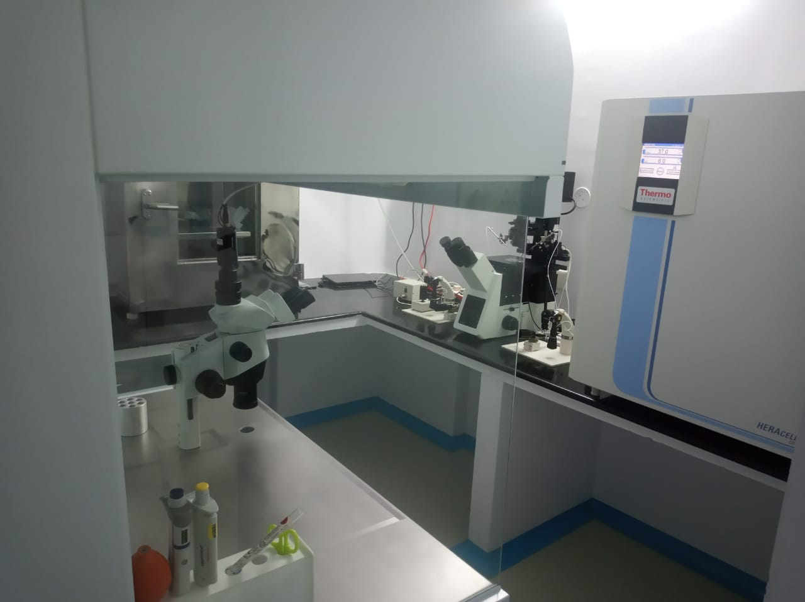
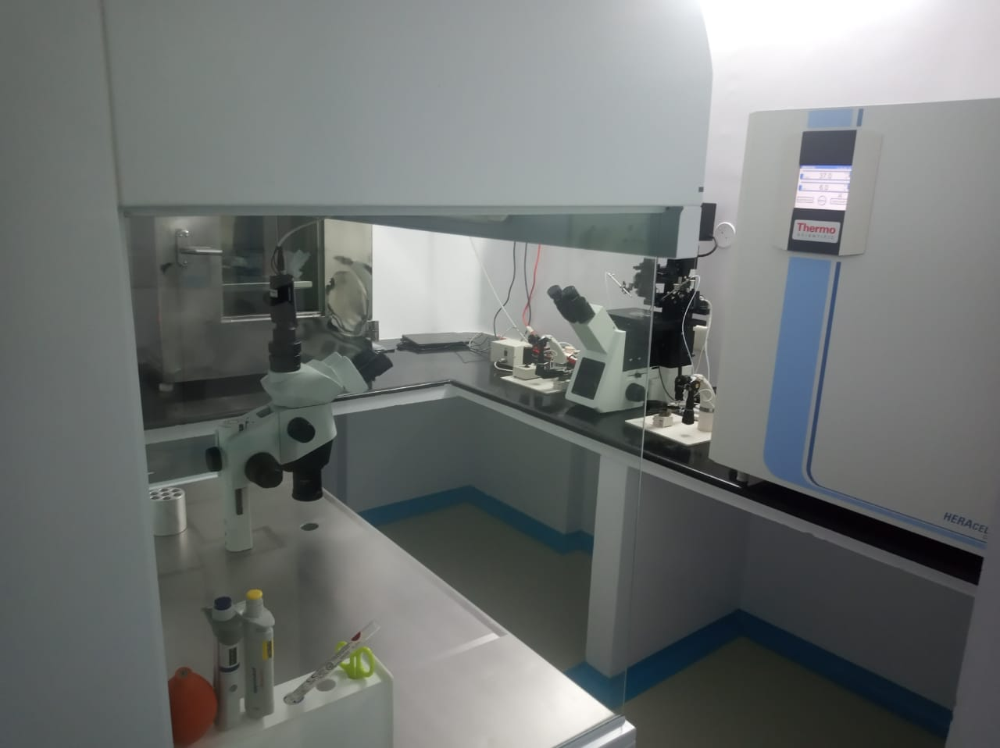
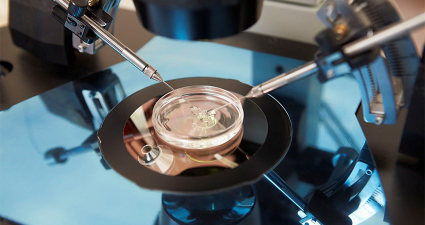

Another advanced technology of treating difficult resistant cases of infertility is available at SB hospital ART Centre. By this method a super selected healthy sperm which has all the necessary qualification to be identified to cause fertilization is identified and is injected under very high power magnification microscope in to the similarly selected ovum (Egg). Because of such selection of near ideal sperm and the egg, the chances of pregnancy with a normal baby are higher than IVF.
ICSI is usually done for all those female patients who have a proven block of both the tubes, or for those with previous IVF failures. If the male partner has no sperms in the seminal fluid or sperms are scarce, some times sperm extraction from the testes or epididymis may be done by various aspiration techniques. In view of the meagre number of sperms, in such couples near ideal sperms are selected and used for ICSI. By this not only the chances of pregnancy are enhanced but also congenital abnormalities in the baby can largely be avoided.
Micro Manipulator and Incubator




Micro Manipulator DISH
